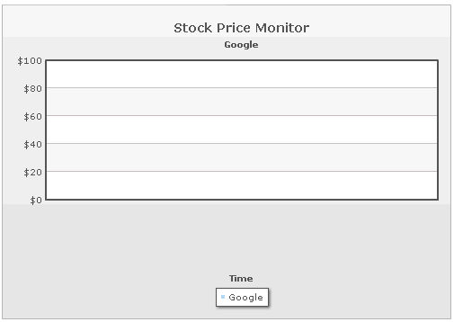
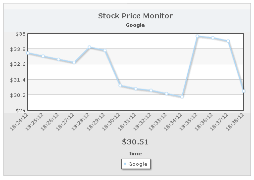
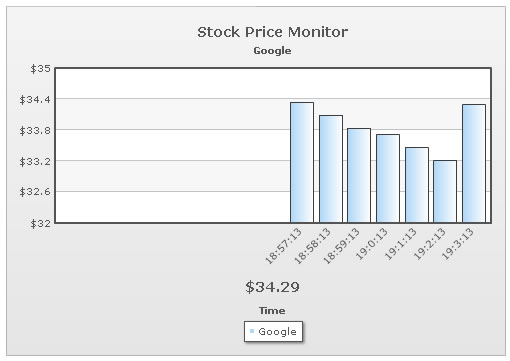
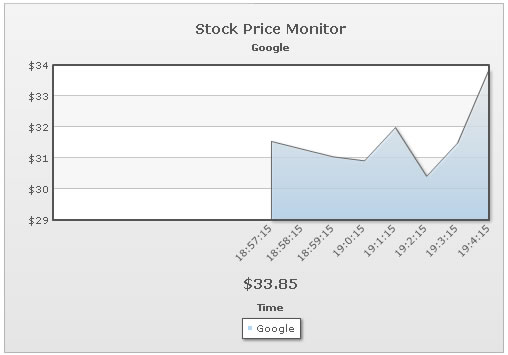

Data Streaming Charts > Creating a simple example |
Here, we'll build a simple live stock monitor using the real-time line chart to monitor the price of a stock (say Google). To create any real-time chart, you'll need to assimilate the following things:
For this example, we've created a folder named RealTime. It's present in Download Package > Code > RealTime. |
| How the chart will look? |
| Before we actually get to the code, let's quickly look at how the chart will look like. Shown below is the chart when initialized (i.e., real time data has not been fetched even once): |
|  |
| After a few incremental updates, the chart would look as under: |
|  |
As you can see above, here we're monitoring the stock price of Google in a real-time line chart. We've:
|
| Building the XML |
| The following XML drives this chart: |
| <chart caption='Stock Price Monitor' subCaption='Google' dataStreamURL='StockPrice.asp' refreshInterval='60' numberPrefix='$' setAdaptiveYMin='1' xAxisName='Time' showRealTimeValue='1' realTimeValuePadding='50' labelDisplay='Rotate' slantLabels='1'> <categories> </categories> <dataset seriesName='Google' showValues='0'> </dataset> <styles> <definition> <style type='font' name='captionFont' size='14' /> </definition> <application> <apply toObject='Caption' styles='captionFont' /> <apply toObject='Realtimevalue' styles='captionFont' /> </application> </styles> </chart> |
Here, we've first:
When providing dataStreamURL path in XML, you need to make sure that:
|
| Sample data provider page |
In this example, we've defined our data provider page as StockPrice.asp. Instead of ASP, you can use any technology like PHP, ASP.NET, JSP, ColdFusion etc. to provide the real-time data. All you need to make sure is:
For our demo, we generate random numbers between 30 and 35 and output them to the chart. The following ASP code does it: |
<%@ Language=VBScript %> 'For the sake of demo, we'll just be generating a random value between 30 and 35 and returning the same. 'Set randomize timers on Dim lowerLimit, upperLimit lowerLimit = 30 'Generate a random value - and round it to 2 decimal places 'Get label for the data - time in format hh:mn:ss 'Now write it to output stream |
The above code is pretty self explanatory. Here, we're:
A sample output from this code is given below: |
| &label=18:36:27&value=32.9 |
| PHP Version of data provider page |
| The ASP code can be replaced by the following PHP code: |
<?php For the sake of demo, we'll just be generating a random value between 30 and 35 and returning the same. Set randomize timers on //Generate a random value between 30 and 35 //Get label for the data - time in format hh:mn:ss //Now write it to output stream |
| Like ASP, the above code outputs the same data. |
| C# Version of Data provider page |
| The code will look as under in ASP.NET (C#): |
<%@ Page Language="C#" %> //Random object //Generate a random value //Get date object //Now write it to output stream |
| C# version (with code behind) of data provider page |
| With C# (with code behind), the code will look as under: |
StockPrice.aspx StockPrice.aspx.cs public partial class _Default : System.Web.UI.Page //Create random object //Generate a random value //Get date object |
| VB.NET version of data provider page |
| In ASP.NET (VB.NET), the code will look as under: |
<%@ Page Language="VB" Culture="Auto" UICulture="Auto" %> 'Set the limits 'Generate a random value - and round it to 2 decimal places 'Get the time in hh:mm:ss format End Sub |
| VB.NET (with code behind) version of data provider page |
| In VB.NET, the code would look as under with a code-behind page: |
StockPrice.aspx StockPrice.aspx.vb Protected Sub Page_Load(ByVal sender As Object, ByVal e As System.EventArgs) Handles Me.Load 'Define variables 'Setting limits 'Generate a random value - and round it to 2 decimal places 'Generate the x-axis label (time in hh:mm:ss format) 'Now write it to output stream |
| JSP version of data provider page |
| In JSP, the code would look as under: |
<%@page language="java"%><%@page import="java.util.Calendar" %><%@page import="java.text.SimpleDateFormat" %><% // Next few steps, to round this double to 2 decimal places // Shift the decimal the correct number of places // Round to the nearest integer. // Shift the decimal the correct number of places Calendar cal = Calendar.getInstance(); String dataParameters = "&label=" +timeLabel+ "&value=" +roundedRandomValue; //Now write it to output stream |
| Changing chart type |
| This chart can be very easily converted to area/column chart, by just changing the name of SWF file used. Shown below are examples of same data but different chart: |
|  |
| Real-time column chart run against the same data. |
|  |
| Real-time area chart run against the same data. |